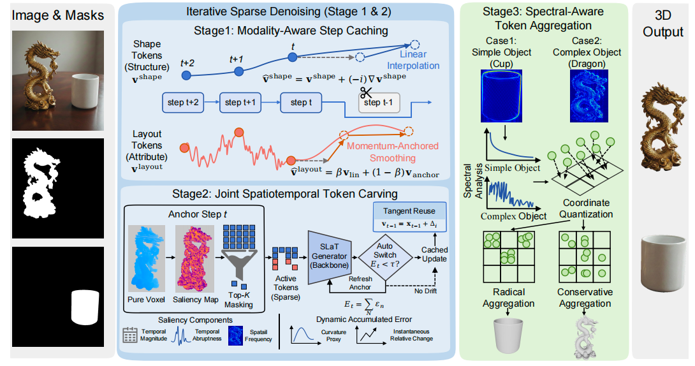
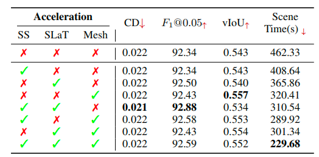
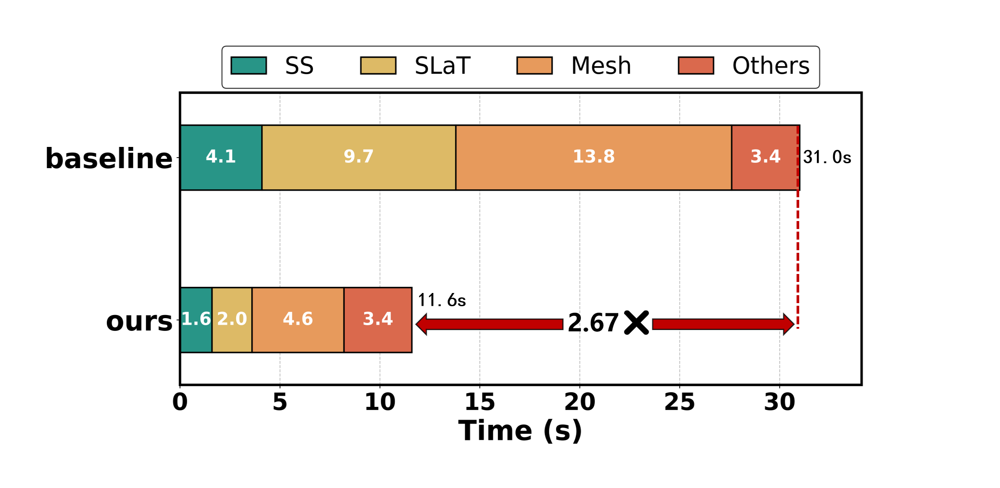

Exponential cache for Fast-SAM3D image-to-3D generation
Fast-SAM3D with a tree-aware HiCache++ cache that forecasts the slat-stage velocity with an exponential (DMD/Prony) basis. Training-free, geometry-preserving, and native — no monkey-patching.
# install (steps from benchmarks/fastsam3d-plus-plus.json)
git clone https://github.com/Archerkattri/fastsam3d-plus-plus.git
cd fastsam3d-plus-plus
pip install -r requirements.txt
pip install 'hicache-pp>=1.2.1'
01
Evidence
| Lossless interval (DMD) | F1 = 1.000 out to interval-6 on the slat-stage FlowMatching |
|---|---|
| Lossless interval (Hermite baseline) | interval-3 — the exponential basis holds quality two intervals further |
| Speedup at interval-6 | best speedup among the lossless configs |
| CPU contract tests | six tests pass (shared cache identity, timing, fallback accounting) |
| DMD fit floor | ≥4 uniform snapshots required, else Hermite warm-up fallback |
| Default cache config | interval=6, history=5 via fm.enable_dmd() |
| Central library pin | hicache-pp>=1.2.1 PyTree implementation |
02
Media


03
Install & verify
# CPU contract tests (release notes: CI green) python -m pytest tests/ -q # expect: 6 passed (README: "Six CPU contract tests pass") # GPU A/B (needs weights + FASTSAM3D_METRICS_PATH; not verified this release) python ab_accel_bench.py --tag hf --mask-index 14 --gpu 0
04
Limits
What this release does not claim (from the release notes):
- GPU speedup validation and weight-gated demo cells.
05
Family
| Base model | Fast-SAM3D, accelerated by the hicache-plus-plus forecast core |
|---|---|
| Same base | sam3d-plus · sam3d-plus-plus · fastsam3d-plus |
| All 13 adapters | TRELLIS: faster-trellis, faster-trellis-plus-plus · TRELLIS.2: fast-trellis2, hermit-trellis2, hermit-trellis2-plus-plus · Hunyuan3D-2: hunyuan2-plus, hunyuan2-plus-plus · Hunyuan3D-2.1: hunyuan2.1-plus, hunyuan2.1-plus-plus · SAM: sam3d-plus, sam3d-plus-plus, fastsam3d-plus, fastsam3d-plus-plus |